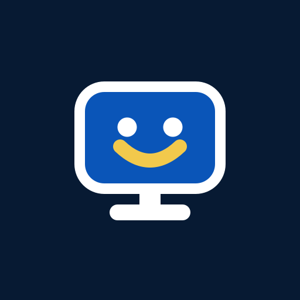
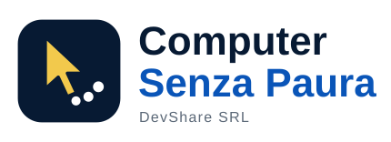
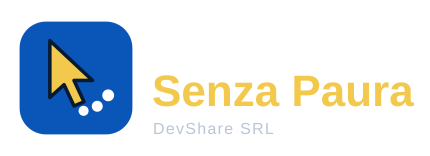
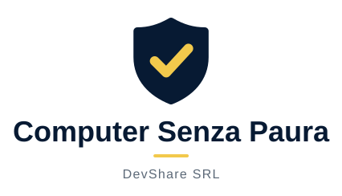
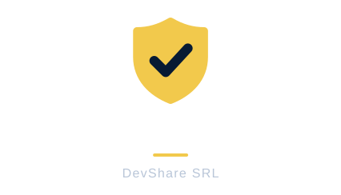

1 Monitor amico
Uno schermo che sorride, il computer non fa paura.
Come apparirebbe nell'intestazione del sito (al posto del riquadro «CSP»)

logo.svg · logo-negativo.svg · simbolo.svg · simbolo-negativo.svg · favicon.svg · favicon.ico · favicon-32.png · apple-touch-icon-180.png · social-1080.png · profilo-512.png


2 Cursore accompagnato
La freccia del mouse con le tappe già fatte: qualcuno ti guida un passo alla volta.
Come apparirebbe nell'intestazione del sito (al posto del riquadro «CSP»)


logo.svg · logo-negativo.svg · simbolo.svg · simbolo-negativo.svg · favicon.svg · favicon.ico · favicon-32.png · apple-touch-icon-180.png · social-1080.png · profilo-512.png


3 Scudo morbido con spunta
Sicurezza e “ce l'hai fatta”, passo dopo passo.
Come apparirebbe nell'intestazione del sito (al posto del riquadro «CSP»)


logo.svg · logo-negativo.svg · simbolo.svg · simbolo-negativo.svg · favicon.svg · favicon.ico · favicon-32.png · apple-touch-icon-180.png · social-1080.png · profilo-512.png